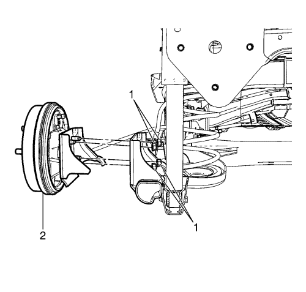
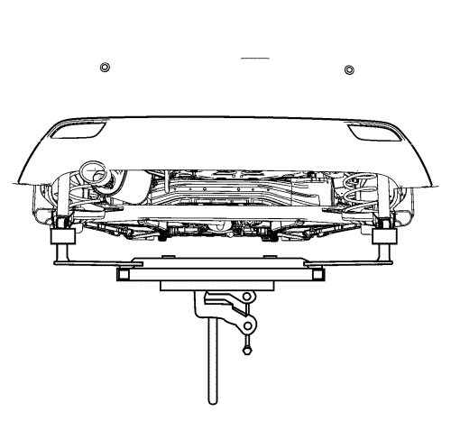
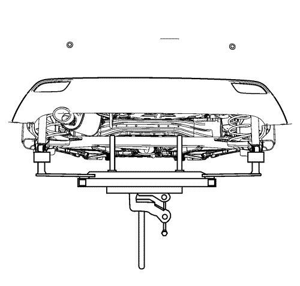
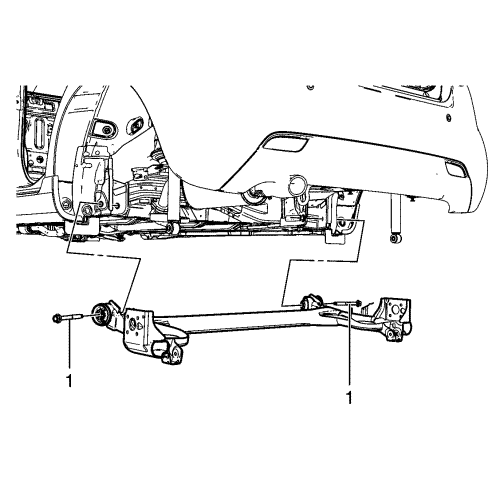
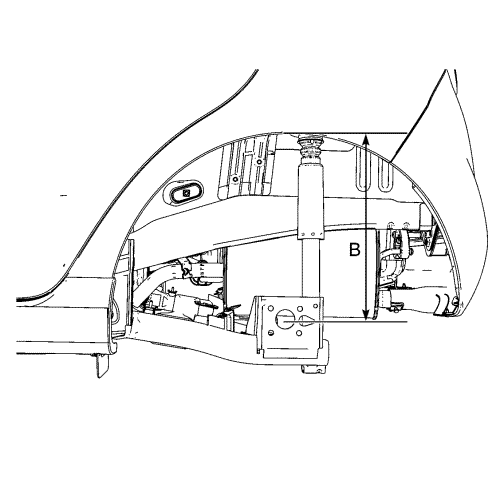

Sustitución del eje trasero
Herramientas especiales
EN-50187 Soporte del eje trasero
Si desea informarse sobre herramientas regionales equivalentes, consultar Herramientas especiales .
Procedimiento de desmontaje
- Suelte el fuelle de la palanca del freno de mano de la consola del suelo y afloje la tuerca de ajuste lo suficiente para aliviar completamente la tensión en el cable del freno de estacionamiento.
- Elevar el vehículo y soportarlo de manera segura. Consultar Elevación del vehículo con un gato .
- Desmontar las ruedas traseras del vehículo. Consultar Desmontaje y montaje de los neumáticos y las ruedas .
- Desconecte los cables del freno de mano del ecualizador y desmonte las tres abrazaderas de cable de freno de mano para ambos cables. Consultar Sustitución del cable del freno de estacionamiento .
- Desmonte ambos sensores de velocidad de la rueda trasera, si está equipado con ABS. Consulte Sustitución del sensor de velocidad de las ruedas traseras .
- Desconecte los tubos de cilindro de la rueda trasera del latiguillo de freno trasero. Consultar Sustitución del tubo flexible del freno trasero .

- Desmonte las tuercas de retención del conjunto de husillo y cojinete/cubo de rueda al eje trasero (1) de ambos lados.
- Desmonte el cojinete/cubos de rueda, los frenos y las placas portafrenos como un conjunto (2) del eje trasero.

- Monte el soporte DT-50187 a un soporte de gato hidráulico y apoye el eje trasero con los dos adaptadores traseros del soporte DT-50187.
- Desmonte del eje trasero ambos pernos de retención del refuerzo del amortiguador al eje trasero. Consultar Sustitución del amortiguador .
- Baje el soporte de gato hidráulico y retire los muelles traseros de ambos lados.

- Coloque el soporte de gato hidráulico con el soporte DT-50187 en el eje trasero y apóyelo con los adaptadores del soporte DT-50187.

- Extraiga los pernos de retención del eje trasero a la carrocería (1).
- Baje lentamente el soporte de gato hidráulico para retirar el eje trasero del vehículo.
- Desmonte los aislantes inferiores del muelle helicoidal trasero del eje.
- Desmonte el eje trasero del soporte de gato hidráulico con el soporte DT-50187.
Procedimiento de montaje
- Coloque el eje trasero en el soporte de gato hidráulico con el soporte DT-50187.
- Monte los aislantes inferiores del muelle helicoidal trasero al eje trasero.
- Usando el soporte de gato hidráulico, levante el eje trasero hasta la posición correcta.
- Apriete a mano todos los pernos de retención del eje trasero a la carrocería (1).

Nota: Los pernos de retención del eje trasero a la carrocería se tienen que apretar con el eje en la altura de suspensión correcta.
- Usando los dos adaptadores traseros del soporte DT-50187 y el soporte de gato hidráulico, levante el eje trasero hasta la especificación de la altura de suspensión correcta (B: 357,2 mm, 14,06 pulg.) midiendo la distancia vertical entre el centro de la rueda y el borde inferior del alojamiento de la rueda.
Precaución: Consulte Precaución con las fijaciones en la sección Prólogo
- Apriete completamente los pernos de retención entre el eje y la carrocería a 170 N·m (125 lib. pie).
- Baje el caballete ajustable hidráulico.
- Monte los muelles traseros.
- Apoye el eje trasero con dos adaptadores traseros del soporte DT-50187 y monte en el eje trasero los pernos de retención del refuerzo del amortiguador al eje trasero. Consultar Sustitución del amortiguador .
- Baje el soporte de gato hidráulico y desmonte el soporte DT-50187.
- Monte el cojinete/cubos de rueda, los frenos y las placas portafrenos como un conjunto en el eje trasero.
- Monte las tuercas de retención del conjunto de husillo y cojinete/cubo de rueda al eje trasero (1) en ambos lados.
- Monte los tubos de cilindro de la rueda trasera en el latiguillo de freno trasero. Consultar Sustitución del tubo flexible del freno trasero .
- Monte ambos sensores de velocidad de la rueda trasera, si está equipado con ABS. Consulte Sustitución del sensor de velocidad de las ruedas traseras .
- Conecte los cables del freno de mano al ecualizador y monte las tres abrazaderas de cable de freno de mano para ambos cables. Consultar Sustitución del cable del freno de estacionamiento .
- Ajuste la tensión del cable del freno de mano. Consultar Ajuste del freno de mano .
- Monte el fuelle de la palanca del freno de mano.
- Purgue el sistema de sistema de frenos hidráulicos. Consultar
Purga de aire del sistema de frenos hidráulicos : Presión → Manual .
- Instalar la llanta trasera y los conjuntos de rueda. Consultar Desmontaje y montaje de los neumáticos y las ruedas .
- Verifique la alineación de las ruedas traseras. Consultar Especificaciones de alineación de rueda .
- Bajar el vehículo.
| © Copyright Chevrolet. Reservados todos los derechos |